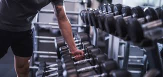
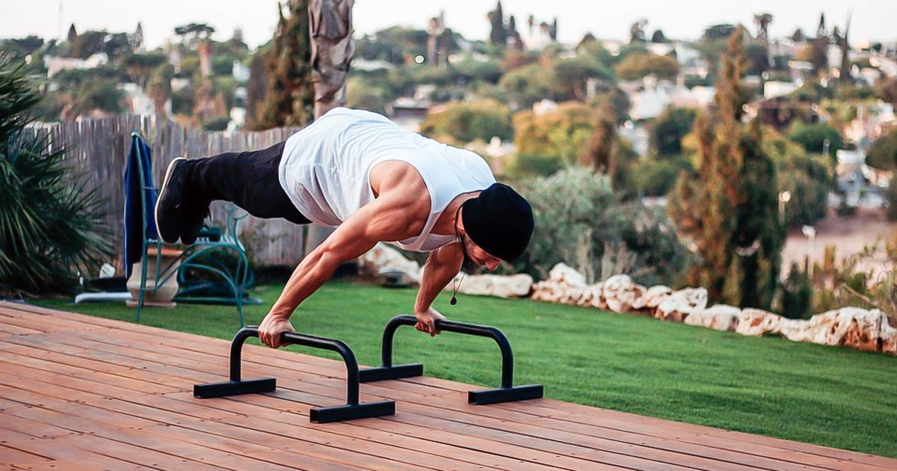

Musculação

A musculação é um tipo de exercício físico focado no desenvolvimento e fortalecimento dos músculos, geralmente realizado com o uso de equipamentos como halteres, barras, máquinas e pesos. "O objetivo da musculação é aumentar a massa muscular, melhorar a força e a definição muscular, e também pode contribuir para a saúde geral e a performance física. As rotinas de musculação geralmente envolvem a realização de exercícios específicos para diferentes grupos musculares, com a variação de cargas e repetições", fala o treinador. Na musculação, são usados tanto exercícios que ativam várias musculaturas, conhecidos como multiarticulares, incluindo supino, levantamento terra e agachamento, quanto exercícios isolados, que focam apenas em uma musculatura, como a rosca bíceps.
Calistenia

A calistenia é uma forma de exercício que utiliza o peso corporal como resistência. "Exemplos de exercícios de calistenia incluem flexões, barras, agachamentos e abdominais", explica o treinador. A prática é valorizada por não requerer equipamentos pesados e por promover força, flexibilidade e resistência. "É muito interessante para quem quer iniciar a atividade física e frequenta praças ou até mesmo pela questão financeira vai treinar em casa mesmo." A calistenia também promove hipertrofia muscular e é um ótimo método para todos os praticantes, já que os movimentos podem ser adaptados para todos os níveis de condicionamento físico, desde iniciantes até atletas avançados.
Calistenia vs. musculação: qual é "melhor"?
Não existe um método "melhor". A escolha entre calistenia e musculação depende dos seus objetivos, preferências e circunstâncias pessoais e ambos os métodos podem promover o ganho de massa muscular. Se você busca praticidade, versatilidade e um corpo funcional, por exemplo, a calistenia pode ser a melhor opção. Por outro lado, se o seu foco é um maior aumento da massa muscular e da força, de forma mais direcionada, a musculação pode ser mais adequada. Algumas pessoas optam por combinar as duas práticas, aproveitando o melhor de ambos os mundos: a força e a hipertrofia da musculação, com a funcionalidade e a mobilidade da calistenia. O importante é encontrar uma rotina que se encaixe no seu estilo de vida e que mantenha você motivado a continuar se exercitando.